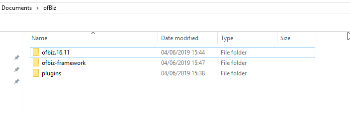

This is a quick guide on how to install the OFBiz demo for developers.
You will need to have installed the recent Java SDK , available here
- First you must install a subversion package , such as: silkSVN
- Then you must create a root diretory for OFBIZ to live at. For example: C:\Users\user\Documents\ofBiz
- Next you must navigate to that directory using cmd prompt/powershell. You can use shift + right click inside the directory to launch powershell directly inside the active directory
- Now you will want to install the OFBiz source code , to do that , inside of the shell/cmd prompt do the following commands.
svn co http://svn.apache.org/repos/asf/ofbiz/ofbiz-framework/trunk ofbiz-framework svn co http://svn.apache.org/repos/asf/ofbiz/ofbiz-plugins/trunk plugins svn co http://svn.apache.org/repos/asf/ofbiz/branches/release16.11 ofbiz.16.11
This stage will take a long time but you should end up with a diretory that looks like so : 
- Now you will want to "build" the source code so it can actually do things.
-
- Naviagate to the "ofbiz.VERSION" folder inside shell/cmd prompt. In this example "ofbiz.16.11"
- Run the following command :
.\gradlew cleanAll loadDefault
-
- Naviagate to the "ofbiz-framework" folder inside shell/cmd prompt.
- Run the following command :
.\gradlew cleanAll loadAll
Now to start the demo run the following command inside the "ofbiz-framework" folder: .\gradlew ofbiz
If installation has been successful , you should be able to navigate to https://localhost:8443/accounting
UserName:admin
password:ofbiz